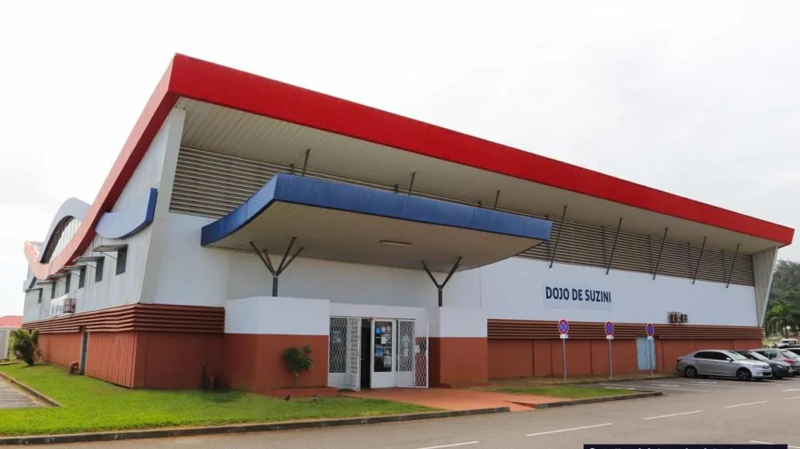

01 / UNE PRÉSENCE ESSENTIELLEEssentielle
Présenter le dojo et orienter les visiteurs.
2 000 €Création · paiement unique
- Une page : Suzini, activités, clubs et contact
- Liste simple des clubs et liens disponibles
- Deux photographies du dojo intégrées
- Navigation mobile et accès aux coordonnées
- Mentions légales et confidentialité à compléter
Une vitrine sans journal, galerie, calendrier ni administration autonome.